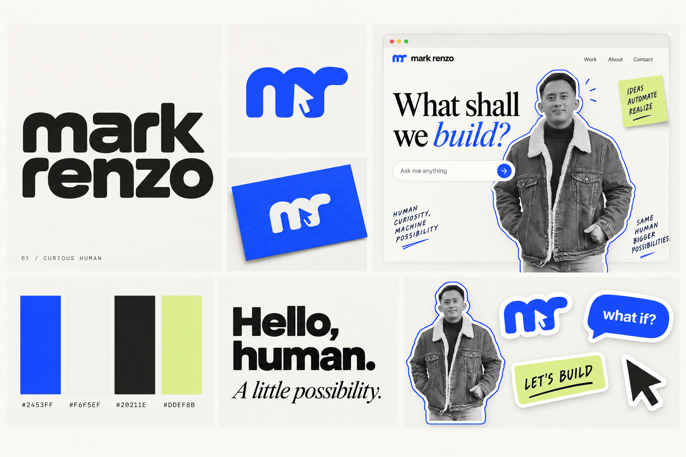

More ways to
make your mark.
Five fresh directions, plus two palette remixes: 05B Mark in Motion and 08B Play Mode in Curious Human’s cobalt and cream.


The image could not load. Open this gallery from the complete branding folder, or use the presentation to review the concepts.
Curious Human
- Logo idea
- Type proposal
- In motion
- Consideration
Concept artwork and transparent raster logos. Typography pairings are proposals; generated lettering may differ. The selected identity will be refined into final vector masters before the portfolio build.
The new shortlist
05B Mark in Motion / Cobalt brings your requested mix together. The signature supplies personality, while cobalt adds a clear visual anchor. Among the new options, 06 is the most playful, 09 is the calmest, and 10 has the strongest editorial feel.